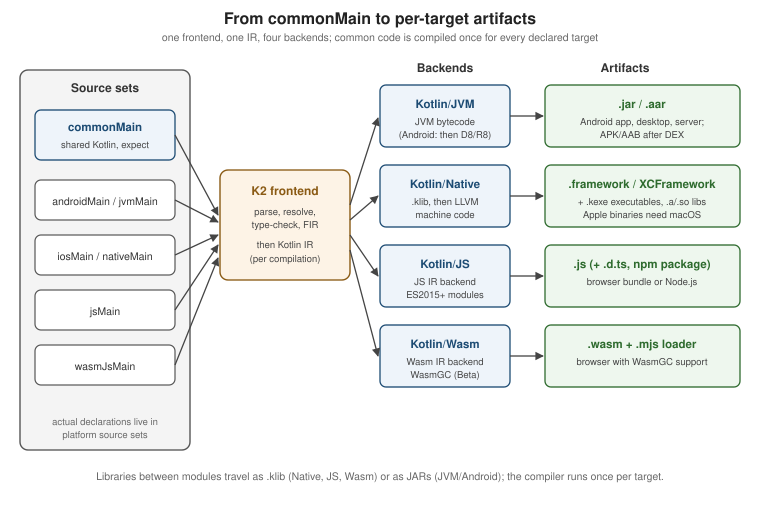

How KMP Compiles: Kotlin/JVM, Kotlin/Native, Kotlin/JS and Kotlin/Wasm
|
This content was generated with the assistance of AI and should be verified against the official documentation before being relied on in production. |
Kotlin Multiplatform (KMP) does not have one compiler that emits one universal binary. It has one frontend that understands your Kotlin source and several backends that each generate code for a different runtime: the JVM, native machine code through LLVM, JavaScript, and WebAssembly. Knowing which backend produces which artifact explains most of the behaviour you will meet later: why some APIs exist only on some targets, why iOS builds need a Mac, why a library publishes several variants, and why a clean build takes minutes.
This page targets the section baseline: Kotlin 2.4.20 with the K2 compiler (the only compiler in current
releases), Xcode 26.4 for Apple targets, and Compose Multiplatform 1.12.1 where UI is mentioned. Stability is
stated wherever it is not Stable: Kotlin/Wasm is Beta, watchOS and tvOS are Beta, and the Kotlin/Native
target-tier system described below is a support policy, not an API. The examples slice the running example,
TrailMate Everywhere (package com.example.trailmate), introduced in
What Kotlin Multiplatform Is and When to Use It.
The Kotlin language itself is not re-taught; see the Kotlin Reference
and, for the compiler and Gradle plugin from the language side,
Kotlin: Build and Tooling.
The Pipeline at a Glance

The pipeline has four stages:
-
Source sets are grouped per target. The Gradle plugin decides which source sets feed which compilation (see Project Structure, Targets, Source Sets and the Hierarchy Template). The
jvm()target compilescommonMain+jvmMain;iosArm64()compilescommonMain+nativeMain
appleMain+iosMain+iosArm64Main, and so on. -
The K2 frontend analyses the code. It builds a tree (FIR, the frontend intermediate representation), resolves names and types, checks
expect/actualpairs, and lowers the result to Kotlin IR. -
A backend generates target code. Each backend consumes IR and emits its own format.
-
Gradle links and packages. Native code is linked into frameworks or executables; JS is bundled by webpack; Wasm gets a loader; JVM classes go into a JAR (or, for Android, are turned into DEX by the Android toolchain).
The K2 Frontend and Kotlin IR
K2 is the Kotlin compiler frontend that became the default in Kotlin 2.0 and is the only frontend in 2.4.20. It matters for multiplatform for three reasons:
-
One analysis model for all targets. Earlier compilers had target-specific frontends with different behaviour; K2 analyses common code once with a shared front end, so a common source set means the same thing on every target.
-
Faster builds. K2 is considerably faster than the old frontend, which matters because multiplatform builds repeat compilation per target.
-
Compiler plugins on IR. Compose, kotlinx.serialization, Mokkery and others are compiler plugins that transform IR, so they work on every backend that supports IR plugins. Their Gradle plugin versions follow the Kotlin version (for example
org.jetbrains.kotlin.plugin.composeandorg.jetbrains.kotlin.plugin.serialization).
The IDE’s Kotlin Multiplatform plugin requires K2 mode, so what the editor shows is what the compiler checks. Ask Gradle for a verbose build to see which compilation tasks run per target:
# run from the TrailMate Everywhere root
./gradlew :sharedLogic:tasks --group=build
./gradlew :sharedLogic:compileKotlinJvm :sharedLogic:compileKotlinIosSimulatorArm64 --dry-runSee Kotlin docs — Kotlin Multiplatform for the overview of how shared code is compiled for each target.
The Four Backends
| Backend | Input and output | Runtime | Typical artifact |
|---|---|---|---|
Kotlin/JVM |
IR to JVM bytecode ( |
JVM 8+; on Android the bytecode is converted to DEX by D8/R8 |
|
Kotlin/Native |
IR to |
No VM; a native binary with the Kotlin runtime (memory manager, garbage collector) linked in |
|
Kotlin/JS |
IR to JavaScript (ES modules, ES2015+) with optional TypeScript declarations |
Browser or Node.js |
|
Kotlin/Wasm |
IR to WebAssembly using the WasmGC proposal, plus a JS loader |
Browser or Node.js with WasmGC (Beta); WASI for server-side use |
|
A common beginner assumption is that Kotlin/Native "translates Kotlin to Swift" or "interprets Kotlin on iOS". Neither is true: Kotlin/Native compiles to ordinary machine code and the Swift or Objective-C side only sees an exported API header. The relationship is covered in Objective-C, Swift and Kotlin Interop.
Kotlin/JVM: Android, Desktop and Server
The JVM backend is the oldest and most mature. It emits standard bytecode, so everything from the Java ecosystem works: JVM libraries, reflection, JNI, and Java interop. In a multiplatform project three kinds of target use it:
-
jvm()for desktop (Compose Multiplatform for Desktop) and server code (for example a Ktor server). -
android { }from the Android-KMP library plugin: the same bytecode, then DEX through the Android toolchain. Android-specific configuration is in The Android Target: the Android-KMP Library Plugin and AGP 9. -
androidApp, a separate application module that is not a KMP module under AGP 9 and merely depends on the shared code.
// sharedLogic/build.gradle.kts
plugins {
alias(libs.plugins.kotlinMultiplatform)
alias(libs.plugins.androidKotlinMultiplatformLibrary)
}
kotlin {
jvm() // desktop and server consumers
android { // com.android.kotlin.multiplatform.library
namespace = "com.example.trailmate.shared"
compileSdk = 37
minSdk = 26
}
sourceSets {
commonMain.dependencies {
implementation(libs.kotlinx.coroutines.core)
}
}
}See Kotlin docs — Supported platforms for the platforms the JVM backend serves in KMP.
The JVM target compiles commonMain with jvmMain, so a platform API such as java.util.UUID is only available
in jvmMain and androidMain, never in commonMain. Common code sees only the Kotlin standard library and
multiplatform libraries, which is exactly what lets the same file also compile for iOS.
Kotlin/Native: LLVM, Frameworks and Executables
Kotlin/Native compiles Kotlin to native binaries that run without a virtual machine. Internally it first produces
a .klib (a library of serialized IR, described below) and then uses an LLVM-based toolchain to turn IR into
machine code for the chosen target. What ends up in the binary:
-
your compiled code and the code of all dependencies, with dead code removed by dead-code elimination;
-
the Kotlin/Native runtime: the memory manager and garbage collector (the new memory manager has been the only one since 1.9.20; the concurrent mark and sweep collector is default since 2.4.0). See Kotlin/Native Memory, Performance and Debugging;
-
bindings to the platform: for Apple targets, platform libraries that expose Foundation, UIKit and other system frameworks to Kotlin without any setup (see expect/actual and Calling Platform APIs).
You choose the kind of binary in the binaries block of a native target. For iOS the typical output is a
framework that Xcode links; for desktop or CLI tools it is an executable.
// sharedLogic/build.gradle.kts (Apple part)
import org.jetbrains.kotlin.gradle.plugin.mpp.apple.XCFramework
kotlin {
val xcf = XCFramework("SharedLogic")
listOf(iosArm64(), iosSimulatorArm64()).forEach { target ->
target.binaries.framework {
baseName = "SharedLogic" // the Swift module name
isStatic = true // static frameworks avoid embedding issues in Xcode
xcf.add(this)
}
}
// A command-line executable instead of a framework (illustrative, Apple silicon Mac host)
macosArm64 {
binaries.executable {
entryPoint = "com.example.trailmate.cli.main"
}
}
}See Kotlin docs — Kotlin/Native for binary kinds and platform libraries.
Gradle names the link tasks from the build type, binary kind and target, for example
linkDebugFrameworkIosSimulatorArm64, linkReleaseFrameworkIosArm64, or assembleSharedLogicXCFramework for the
combined artifact. On the Swift side the framework is imported by its baseName:
// iosApp/iosApp/PlatformLabel.swift
import SharedLogic // the baseName set in the Gradle binaries block
func platformLabel() -> String {
// top-level Kotlin function platformName() in Platform.ios.kt
return Platform_iosKt.platformName()
}An XCFramework bundles the framework slices for several architectures and SDKs (device and simulator) in one folder; it replaces the legacy "fat" universal frameworks, which cannot combine two slices of the same platform such as arm64 for both device and simulator. How Xcode consumes it, and the SwiftPM and CocoaPods routes, are compared in iOS Integration Options.
.klib: the Library Format
A .klib is the library format shared by Kotlin/Native, Kotlin/JS and Kotlin/Wasm. It is an archive holding
serialized Kotlin IR, metadata and resources; it is not machine code, which is why a klib can be compiled
further for any target of its family. When you depend on a multiplatform library such as Ktor or kotlinx.coroutines,
Gradle resolves one variant per target: a JAR for JVM and Android, and a klib for each native, JS and Wasm
variant. A library publishes a klib per target plus Gradle module metadata that links them (covered in
Dependencies, klibs.io, cinterop and SwiftPM Import).
Practical consequences:
-
A klib built for
iosArm64cannot be used forlinuxX64: the klib is target-specific for Native, because the IR contains platform-library references andactualimplementations chosen for that target. -
Shared metadata klibs exist for intermediate source sets (for example
appleMain), so the IDE can analyse code that targets a group of platforms. They are for analysis; your binary is built from the per-target compilation. -
A klib is consumed by the linker, so a library with no binary of its own (a shared module without a
binaries { framework {} }block) produces only klibs, not a framework.
Kotlin/JS
Kotlin/JS compiles IR to JavaScript with the JS IR compiler, the only supported JS backend. It emits ES modules and can target ES2015 and newer; the older ES5-only output of legacy compilers is gone. Output goes to the browser (bundled with webpack by the Gradle plugin) or to Node.js. Kotlin/JS is Stable as a KMP web target.
// webApp/build.gradle.kts (Kotlin/JS variant, instead of wasmJs)
kotlin {
js {
browser() // bundle for the browser; nodejs() targets Node
binaries.executable() // produce a runnable bundle
generateTypeScriptDefinitions() // emit .d.ts for @JsExport declarations
}
}Only declarations annotated with @JsExport are visible to JavaScript or TypeScript consumers; everything else
may be renamed or removed by the optimizer. This is the same idea as limiting the exported API to Swift, and it
keeps output small. In Kotlin/JS, Long is a Kotlin class rather than a JS number, so types crossing the boundary
must be chosen deliberately.
Kotlin/Wasm
Kotlin/Wasm compiles IR to WebAssembly using the WasmGC proposal, so the browser’s garbage collector manages
Kotlin objects. It is Beta. Compose Multiplatform for web is built on the wasmJs target and is also Beta
(since CMP 1.9). The compiled output is a .wasm module plus a JavaScript loader; it runs in browsers with WasmGC
support. There is also a wasmWasi target for WASI runtimes outside the browser; it is far less used.
// webApp/build.gradle.kts
import org.jetbrains.kotlin.gradle.ExperimentalWasmDsl
kotlin {
@OptIn(ExperimentalWasmDsl::class)
wasmJs {
browser()
binaries.executable()
}
}Choosing between the two web targets is a trade-off. A project can declare both and share a webMain source set
between them; the details, browser support and CMP for web are in
Web with Kotlin/Wasm and Kotlin/JS.
| Kotlin/JS | Kotlin/Wasm | |
|---|---|---|
Stability (2.4.20) |
Stable |
Beta |
Output |
JavaScript (ES modules) |
WebAssembly (WasmGC) plus JS loader |
Browser support |
Every modern browser |
Browsers with WasmGC support |
Runs Compose Multiplatform for web |
Compatibility target, not the primary path |
Primary path (Beta) |
JS interop |
Direct, dynamic; |
Typed external declarations, explicit conversions |
How Common Code Is Compiled Once Per Target
Common code is not "compiled once and run everywhere". It is analysed once and compiled once per target. A line
in commonMain is compiled again for jvm, android, iosArm64, iosSimulatorArm64, wasmJs and every other
declared target. That is why:
-
Adding a target multiplies compilation time. Declaring only the targets you ship (and not for example
linuxX64"just in case") is the cheapest optimization. -
The same Kotlin source can behave differently on different runtimes:
Float.toString()formatting, regular expression syntax details,Longrepresentation on JS, and string normalization all depend on the platform’s implementation. Test on every target (see Testing). -
A compile error that appears for only one target usually means the code relied on an API absent there.
expect/actual is the mechanism that lets common code call something each target implements differently. The
expect declaration is checked in common code, and each target’s compilation must find a matching actual.
// sharedLogic/src/commonMain/kotlin/com/example/trailmate/Platform.kt
package com.example.trailmate
expect fun platformName(): String
fun greeting(): String = "Welcome to TrailMate on ${platformName()}"// sharedLogic/src/iosMain/kotlin/com/example/trailmate/Platform.ios.kt
package com.example.trailmate
import platform.UIKit.UIDevice
actual fun platformName(): String =
UIDevice.currentDevice.systemName() + " " + UIDevice.currentDevice.systemVersion// sharedLogic/src/jvmMain/kotlin/com/example/trailmate/Platform.jvm.kt
package com.example.trailmate
actual fun platformName(): String = "JVM ${System.getProperty("java.version")}"See Kotlin docs — Expected and actual declarations
for the rules. Because the compiler finds UIDevice only in the Apple compilations, the iosMain file cannot
accidentally leak into jvmMain.
The Kotlin/Native Target List and Support Tiers
Kotlin/Native supports many operating systems and CPU architectures. Each is a target with a Gradle function that
you call in the kotlin {} block. Kotlin groups them into support tiers that describe how much testing and
stability the team commits to. Tier 1 targets are tested on CI and keep source and binary compatibility between
compiler releases; Tier 2 targets are tested regularly and are expected to work; Tier 3 targets are not guaranteed
to be tested and may fail to compile or run in a given release, with no promise of compatibility between releases.
| Tier | Targets | Typical use |
|---|---|---|
Tier 1 |
|
iPhone, iPad and Apple-silicon Mac development |
Tier 2 |
|
Linux servers and CLIs; Apple Watch and Apple TV (Beta product platforms) |
Tier 3 |
|
Intel simulators, Windows native, Android NDK-only code |
Deprecated |
|
Intel Macs and old watches; migrate away |
How to apply the table:
-
For an iPhone app you need
iosArm64()(devices) andiosSimulatorArm64()(simulators on Apple silicon Macs). Both are Tier 1.iosX64()is only needed for the Intel simulator and is Tier 3. -
The old
ios()shortcut was removed in 2.2.0; declare the concrete targets and let the default hierarchy template createiosMain. -
A deprecated target still compiles but emits a warning, and will eventually be removed; do not add one to a new project.
-
Google’s own support tiers for KMP libraries differ and are about Jetpack libraries, not about Kotlin compilation: Android, JVM and iOS are its Tier 1, macOS and Linux Tier 2, and watchOS, tvOS, Windows, JS and Wasm Tier 3. Do not confuse them with Kotlin/Native tiers.
// sharedLogic/build.gradle.kts
kotlin {
iosArm64() // Tier 1: physical devices
iosSimulatorArm64() // Tier 1: simulator on Apple silicon
// iosX64() // Tier 3: only if you still need the Intel simulator
// macosX64() // deprecated: Intel Mac target
}See Kotlin docs — Kotlin/Native target support for the authoritative, current list.
Apple Minimum OS Versions
Kotlin/Native compiles for a minimum deployment OS. Its defaults are iOS 15 and macOS 12; code compiled against these does not call anything that needs a newer OS unless the code itself requests it. Your Xcode project sets its own deployment target, and the effective minimum for the app is the higher of the two. If the Xcode target is lower than what the Kotlin framework needs, the linker or the App Store upload may complain, so keep them aligned. CMP itself requires iOS 14 (see Compose Multiplatform on iOS).
# iosApp/iosApp.xcodeproj (build settings; shown as an xcconfig excerpt)
IPHONEOS_DEPLOYMENT_TARGET = 16.0
MACOSX_DEPLOYMENT_TARGET = 13.0See Kotlin docs — Kotlin/Native target support for the default minimum versions, and Xcode Projects and Previews for where deployment targets are set in Xcode.
Host Requirements: What Can Build What
The compiler itself runs on the JVM, but linking and Apple SDKs set limits. The rule worth memorising is: Apple binaries can only be built on macOS. Frameworks, XCFrameworks and Apple native executables need Xcode and its SDKs. Kotlin can still compile other targets on any host.
| Target family | macOS | Linux | Windows |
|---|---|---|---|
JVM and Android ( |
Yes |
Yes |
Yes |
Kotlin/JS and Kotlin/Wasm |
Yes |
Yes |
Yes |
Apple ( |
Yes (Xcode required) |
No |
No |
Linux native ( |
Yes |
Yes |
Yes (cross-compile) |
Windows native ( |
Yes |
Yes |
Yes |
Two consequences matter for teams. First, a Windows or Linux developer can build and test everything except the Apple targets; the Kotlin Gradle plugin skips Apple targets on unsupported hosts with a warning rather than failing the build. Second, publishing a multiplatform library needs a macOS host to produce the Apple variants; otherwise the published module lacks them. CI therefore commonly builds on a macOS runner (or a macOS-plus-Linux matrix). See Publishing Multiplatform Libraries and CI/CD with GitHub Actions.
See Kotlin docs — Set up multiplatform library publication for the host requirement.
Which Targets Does Your Project Need?
| Project | Declare these targets | Notes |
|---|---|---|
Mobile app, shared logic only |
|
Add |
Mobile app with Compose Multiplatform |
The same, plus |
CMP Android, iOS and desktop are Stable; web is Beta |
Desktop app |
|
Compose Multiplatform for Desktop; Tier 1 equivalent maturity |
Web app |
|
Optionally both, sharing |
Server (Ktor) |
|
Optionally |
Multiplatform library |
Every target the library supports; at minimum JVM, Android, iOS |
Libraries should cover more targets than apps |
The TrailMate Everywhere sharedLogic module declares jvm(), android, iosArm64(), iosSimulatorArm64() and
wasmJs(), because the Android, iOS, desktop and web apps all consume it.
Common Mistakes
-
Calling a platform API from
commonMain.java.io.File,UIDeviceorwindowfail on other targets; put the call behindexpect/actualor an interface. -
Declaring
iosX64()by default. It is Tier 3; modern Macs run the Arm simulator, soiosSimulatorArm64()is the target you need. -
Using the removed
ios()shortcut from old tutorials; declare the concrete targets. -
Adding deprecated targets (
macosX64,tvosX64,watchosX64,watchosArm32). -
Expecting to build iOS on Linux or Windows. Use a macOS runner for Apple targets.
-
Assuming Beta targets are production-stable. Kotlin/Wasm and CMP for web are Beta; watchOS and tvOS are Beta.
-
Mixing static and dynamic frameworks carelessly. Prefer one framework (
isStatic = true) exporting the shared API, not one per module. -
Omitting the baseName. The Swift
importname comes frombaseName, not the module directory. -
Treating a
.klibas a distributable library for Swift. Swift consumes frameworks or XCFrameworks.